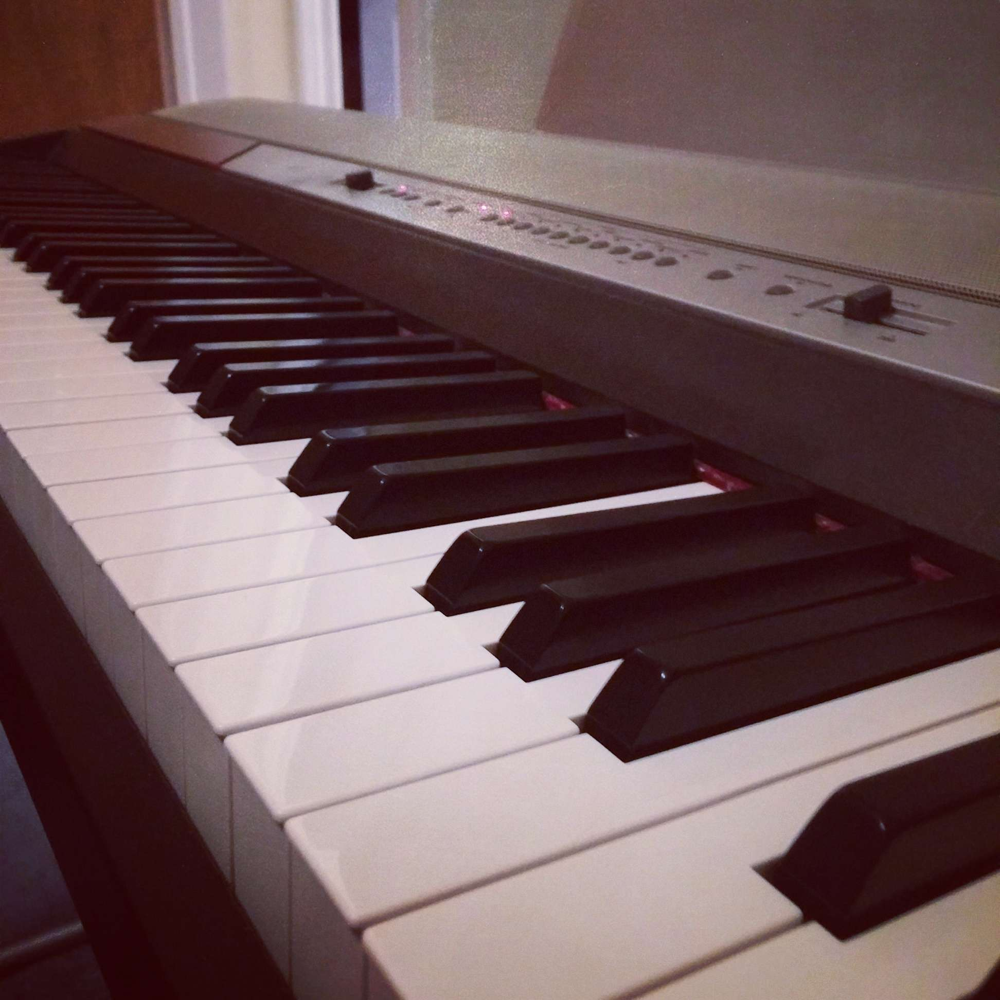

Piano and Music Production
I have studied music as a hobby for many years, starting way back in piano lessons in third grade.
I have a great love for the piano, specifically this one:

In most recent years, I tend to play classical pieces (my favourite composers are Chopin and Rachmaninoff),
but I also occasionally play jazz or music from the soundtracks of video games or movies.
Sometimes I put on recitals for family and friends or do recording so I get to play around with the production side of music as well.
Below are two excerpts I recorded, which are written by Rachmaninoff and Vince Guaraldi respectively.
Moment Musicaux No. 5
Happiness Is
When I am in the mood, I will sometimes write my own music, mostly inspired by soundtracks from video games I have played.
I typically work with MIDI and soundfonts as opposed to recording actual acoustic or electric instruments.
Here are three samples of original tunes created with MIDI using various restrictions:
the first uses a variety of free public domain soundfonts;
the second uses soundfonts from a SNES game,
Secret of Mana; the third uses synths emulating a Game Boy soundchip.